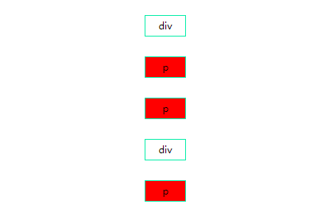
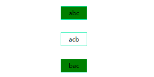
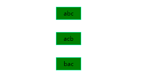
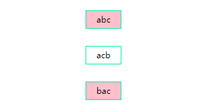

关系选择器：
(E~F)：选择E元素后面的所有兄弟元素F
1.<style>
2. div~p{
3. background=red;
4. }
5.</style>
6.<body>
7. <div>div</div>
8. <p>p</p>
9. <p>p</p>
10. <div>div</div>
11. <p>p</p>
12.</body>

属性选择器
E[att^='val']：选择具有att属性且属性值为以val开头的字符串的E元素
1.<style>
2. div[class^='a']{
3. background=green;
4. }
5.</style>
6.<body>
7. <div class='abc'>abc</div>
8. <div class='acb'>acb</div>
9. <div class='bac'>bac</div>
10.</body>
E[att$='val']：选择具有att属性且属性值为以val结尾的字符串的E元素
1.<style>
2. div[class$='c']{
3. background=green;
4. }
5.</style>
6.<body>
7. <div class='abc'>abc</div>
8. <div class='acb'>acb</div>
9. <div class='bac'>bac</div>
10.</body>

E[att*='val']：选择具有att属性且属性值为包含val的字符串的E元素
1.<style>
2. div[class*='b']{
3. background=green;
4. }
5.</style>
6.<body>
7. <div class='abc'>abc</div>
8. <div class='acb'>acb</div>
9. <div class='bac'>bac</div>
10.</body>

E:not(s)：匹配不含有s选择符的元素E
1.<style>
2. div:not(.acb){
3. background=green;
4. }
5.</style>
6.<body>
7. <div class='abc'>abc</div>
8. <div class='acb'>acb</div>
9. <div class='bac'>bac</div>
10.</body>

E:last-child：匹配父元素的最后一个子元素E
1.<style>
2. p:last-child{background:red}<!--可以匹配到内容为p2的p标签-->
3. div:last-child{background:red}<!--这样写是无效的-->
4.</style>
5.<body>
6. <div>
7. <div>div1</div>
8. <div>div2</div>
9. <p>p1</p>
10. <p>p2</p>
11. </div>
12.</body>
E:only-child：匹配父元素仅有的一个子元素E。要使该属性生效，E元素必须是某个元素的子元素，E的父元素也可以是body。
1.<style>
2. li:only-child{background:red}
3.</style>
4.<body>
5. <ul>
6. <li></li><!--只有这个li被匹配到了-->
7. </ul>
8. <ul>
9. <li></li>
10. <li></li>
11. <li></li>
12. </ul>
13.</body>
E:nth-child(n)：匹配父元素的第n个子元素E，如果该子元素不是E，则无效
1.<style>
2. <!--实现奇偶选择-->
3. <!--方式1-->
4. li:nth-child(2n){color:green}<!--偶数-->
5. li:nth-child(2n-1){color:blue}<!--奇数-->
6. <!--方式2-->
7. li:nth-child(even){color:green}<!--偶数-->
8. li:nth-child(odd){color:blue}<!--奇数-->
9.</style>
10.<body>
11. <ul>
12. <li>1</li>
13. <li>2</li>
14. <li>3</li>
15. <li>4</li>
16. </ul>
17.</body>